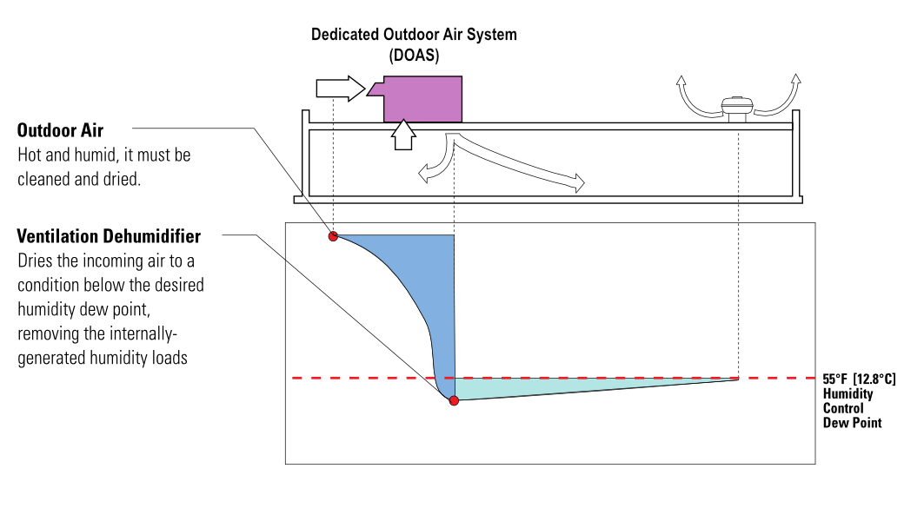

System image

What it is
DOAS (Dedicated Outdoor Air System) is focused on one job: ventilation. It brings in outdoor air, filters it, and usually cools/dehumidifies it to a controlled condition before delivering it to the building. The “space heating/cooling” is often done by a separate system like VRF or fan coils.
Where you’ll see it
- Schools, offices, and buildings with high ventilation needs
- Humid climates where moisture control matters
- Projects that use VRF or fan coils for zoning
Main components
Outdoor air intake
Filters
Cooling coil
Reheat (optional)
Energy recovery (optional)
Supply fan
Controls
A DOAS may include an energy recovery wheel/core to pre-condition incoming air.
How it works
- Bring in 100% outdoor air (no return air mixing for many DOAS designs).
- Filter and cool the air to remove moisture (dehumidify).
- Optionally reheat slightly so supply air isn’t too cold.
- Deliver ventilation air directly to zones (often a small duct to each zone).
- Zone equipment handles the remaining heating/cooling load.
Pros / Cons
Pros
- Strong ventilation and humidity control
- Makes zoning systems more comfortable and stable
- Can reduce need to “over-ventilate” through terminal units
Cons
- Often requires another system for heating/cooling
- Still needs duct distribution (smaller than full-air systems)
- Control strategy needs to be thought through